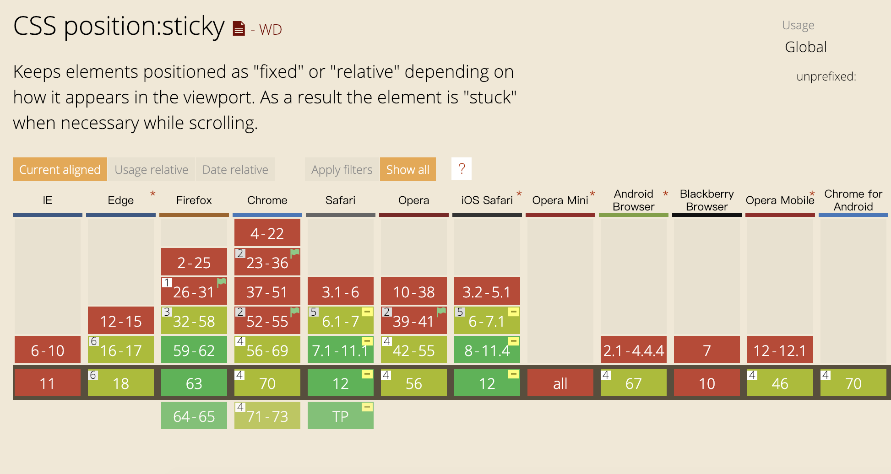

前端开发中常见的一个需求是菜单滚动到顶部后吸顶，也即是固定在顶部。我们先来看看如下视频：
可以看到菜单在滚动到顶部时是fixed的，接下来我们来看看常见的几种方式及适用场景。
1. 原生scroll事件实现
利用scroll检查滚动容器的scrollTop和菜单的offsetTop，来决定fixed的菜单副本是否显示， 为了简单、易于实现以及性能问题，本文实现的几个例子除了第二个例子其他都是用了两个菜单， 吸顶的菜单真实是隐藏的第二个菜单，在这里说明一下。
具体实现可以看codesandbox中的代码。
2. position: sticky
通常positon使用比较多的是absolute、relative、fixed、static，在这我们使用另外一个position属性， 更多详细介绍可网络搜索，网上介绍已经很多了。前端开发兼容性非常重要，这里我们看下兼容性。
可以看到safari浏览器上支持的很好，firefox、chrome PC端支持的还不错，但是安卓上支持的不够好。当然我们可以使用polyfill， stickyfill。
具体实现看代码：
3. setInterval
看到setInterval自然不必说了，优缺点很明显。优点是对于一些封装的scroll组件非侵入就能实现吸顶， 为什么这么说呢，比去vue-scroller并没有提供scroll接口，并且此组件使用touch、mouse事件外加translate模拟实现的scroll组件， 所以无法监听scroll事件，甚至元素的位置获取都有些麻烦。但是通过setInterval很容易的实现吸顶，但是缺点也很明显，对于事件间隔很敏感， 时间间隔太大吸顶就会延迟；间隔太短，频繁执行对性能又有影响。
看代码：
4. vue-scroller by scroll event
最后一种只是针对类似这种组件实现模拟出的scroll事件接口，并非真正的scroll事件，以为如touch事件来说， 当手指滑动屏幕稍微快一些然后离开屏幕后，滚动还会继续一段。此时并不会出发touchmove事件，也就不从判断菜单位置了，这也是为何touch事件不易做到吸顶。 好在vue-scroller源码中有模拟离开屏幕后继续滚动动画的step，我们在其中加上callback以及在touchmove事件中也加上此callback就实现onscroll可以了。
具体可见代码，fork vue-scroller的代码，添加了两个接口，scrollingComplete是停止滚动的回调， stepCallback是onscroll回调，具体可见readme。
效果如下：